Comprendre un univers. Lui donner une forme concrète.
01 Interpréter · 02 Construire · 03 Trouver
Lire un brief, traduire une intention en personnages et en silhouettes, puis sourcer la bonne pièce : seconde main, boutique, location ou stock personnel.
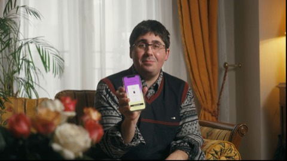
ATL-01Backmarket · Félipé et Ronaldo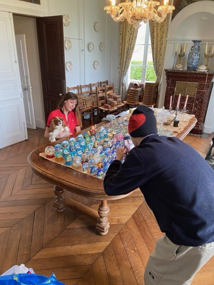
ATL-02Backmarket · Marjolaine et ses boules à neige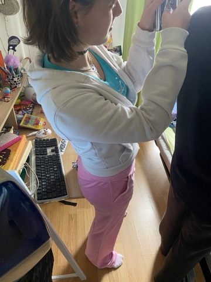
ATL-03Backmarket · Retro Tech, Vlog 2005ATL-04Lidl · 90's Ad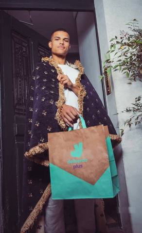
ATL-05Visa x Deliveroo · Dump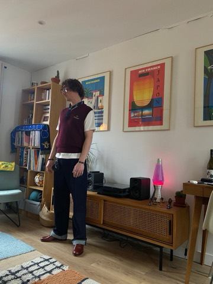
ATL-06Backmarket · Gifting Season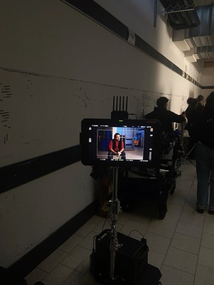
ATL-07Lidl · Injustice, partie 2ATL-08Visa · SkiATL-09Dunkin' · Match avec ton Match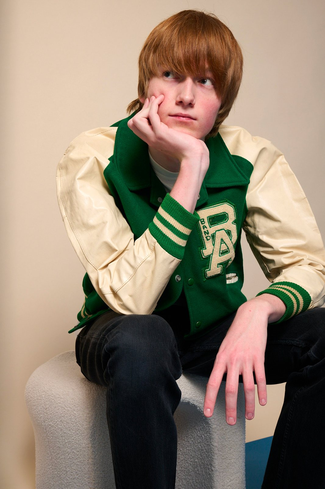
Book vintage
Éditorial studio personnel, pensé pour montrer une méthode plutôt qu'une commande client. Pièces vintage sur fond papier coloré : varsity jacket, pull rayé, blouson cuir, pull moutarde, bijoux en détail.
Photo Yann Stofer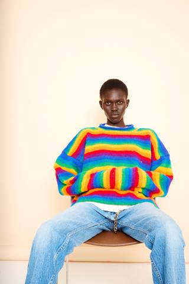
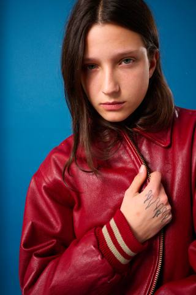
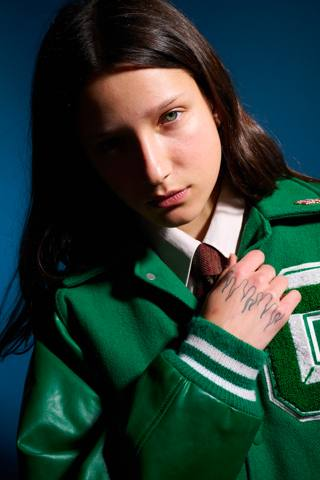
Félipé et Ronaldo
Deux personnages pour la même mécanique : un passionné de maracas aux pièces fortes d'inspiration sud-américaine, un bartender star de Mulhouse en costume cheap et chemise kitsch.
© Back Market / Marcel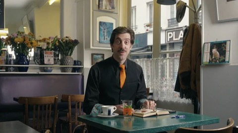
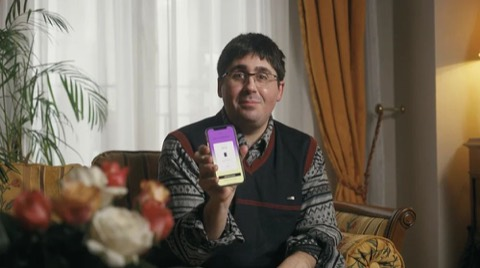
Marjolaine et ses boules à neige
Un personnage pour un film de campagne. Construire une châtelaine quinquagénaire, entre ordre, tradition et humour piquant : cardigans, perles, matières nobles, un vestiaire de femme qui reçoit.
© Back Market / Marcel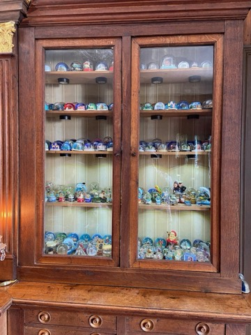
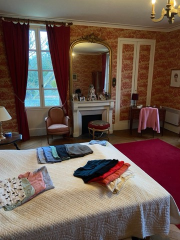
Retro Tech, Vlog 2005
Le Vlog 2005 : deux silhouettes années 2000 pour une campagne tech seconde main. Velours, taille basse, zip-hoodies et accessoires qui brillent, pour faire dialoguer le rétro et l'électronique.
© Back Market / Marcel90's Ad
Un plateau télé des années 90 rejoué au premier degré. Un présentateur en costume gris à épaulettes et cravate trop large, une présentatrice en tailleur couleur douce : très clean, légèrement de mauvais goût, jamais caricatural.
© Lidl / Marcel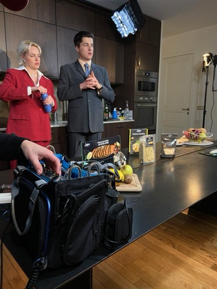
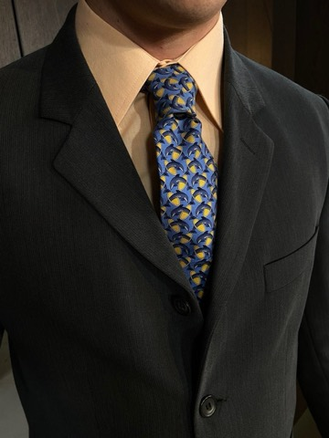
Dump
Un carrousel façon photo dump : la photo de confirmation de livraison devenue moment royal. Cinq scènes, des tenues d'intérieur ultra confortables et un détail qui couronne tout, un plaid porté en cape, un casque gaming posé comme une couronne.
Photo @frankieallio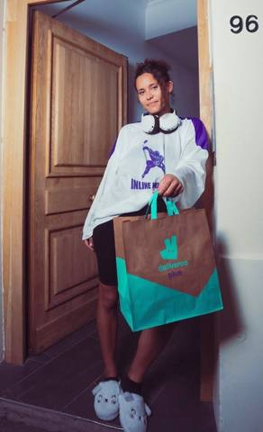
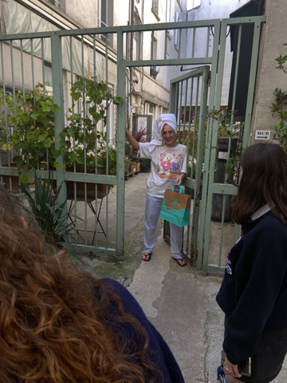
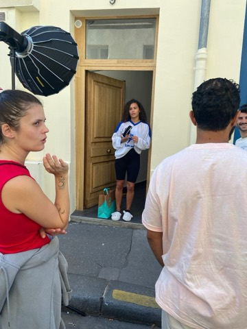
Gifting Season
Quatre personas de shoppeurs de fêtes de fin d'année. Construire une garde-robe et une attitude différentes pour chacun, à partir d'un même brief cadeaux.
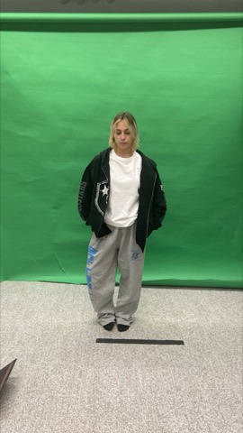
Injustice, partie 2
Des silhouettes lisibles en une seconde à l'écran. Un présentateur crédible en figure journalistique, deux employés de supermarché aux couleurs de leur enseigne : l'exactitude du quotidien plutôt que le costume.
Lidl / Marcel · réalisation et image Sasha Metgy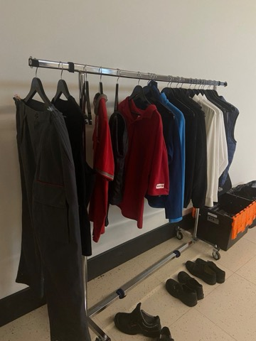
Ski
Deux talents, un vestiaire de montagne du quotidien plutôt qu'une panoplie de ski. Polaires, doudounes, pantalons de travail écru : une pièce forte bleu Visa, une pièce blanche, et la superposition pour faire le reste.
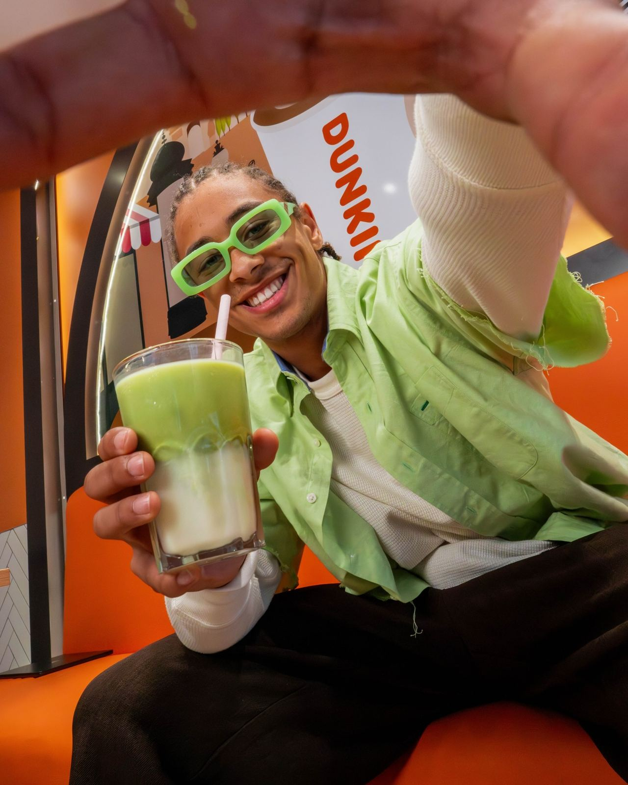
Match avec ton Match
Shoot autour d'un thème de duo assorti. Direction streetwear décontractée, accessoires et couleurs pensés pour fonctionner en tandem.
© Dunkin' France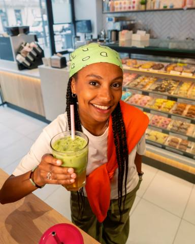
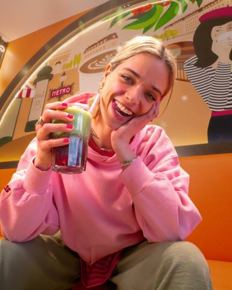
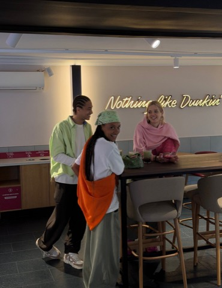
Un projet commence rarement avec une page blanche. Un brief arrive avec une intention, un univers, une ambiance. L'agence ou les créatifs ont généralement déjà posé une direction, parfois des pistes très précises. Le travail commence là : comprendre ce qui est demandé, identifier ce qui doit être traduit par le vêtement, chercher les références qui alimentent cette direction, puis passer de l'intention à des silhouettes réelles.
Le processus continue dans le réel. Chercher les pièces, construire les looks, composer avec ce qui existe vraiment. Essayer, ajuster, recommencer. Une silhouette ne se construit pas uniquement sur un moodboard : les vêtements trouvés, les contraintes de production et les essayages transforment souvent les premières intentions.